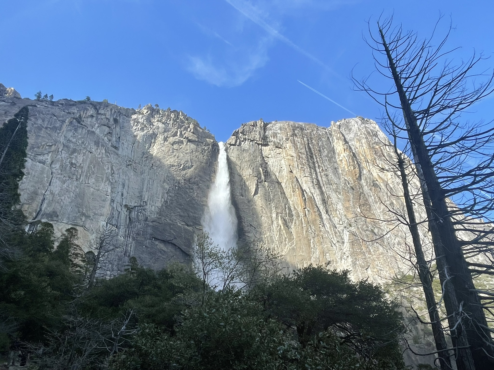
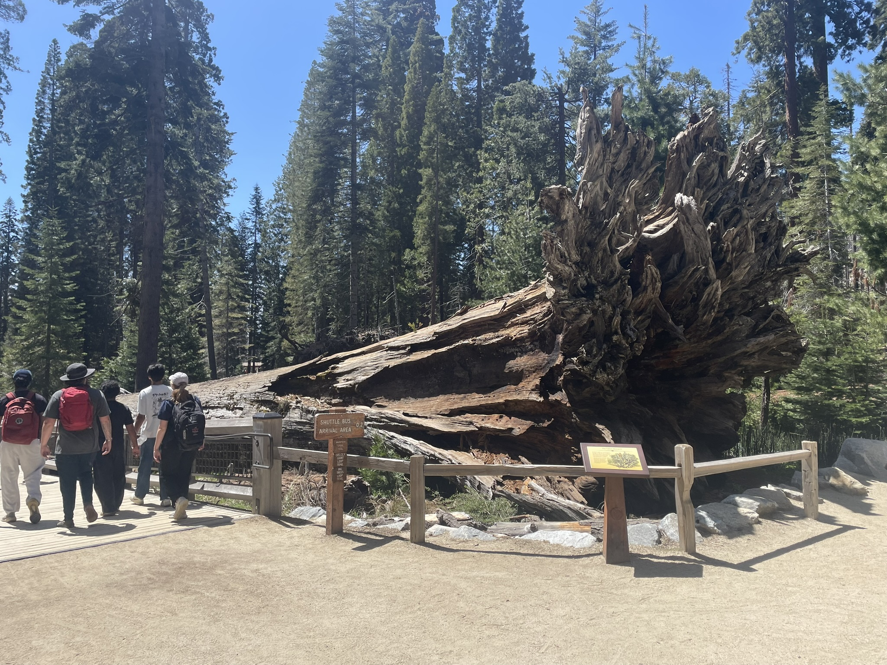

editing kevin: ok so like 5 minutes ago i was scrolling twitter and came across a post celebrating a $30/hr job. only then did i realize how privileged this entire essay was. oh well, i'm still putting it out here, just to warn other prospective swe interns to NEVER EVER WORK AT A BANK JUST TRUST ME ON THIS
I just had my best and worst internships back-to-back during the big 26. Out of a sample size of four, maybe five, it doesn't really mean much, but I believe the gap is big enough to warrant this quick little rant.
During the spring quarter, I took a break off school to go work at Apex Spacecraft, a satellite manufacturing startup. Though initially hesitant about not being able to mess around with my friends as often as I usually could, I came around to it and took the offer. It was still in LA, after all. What's a couple of bus transfers in the grand scheme of things?
It was only after I committed to the next company that I realized I could've extend this internship througout the summer. Not only would I not have to fly all the way over to the east coast, it could've made transit over to Anime Expo a bajillion times easier...
Oh well. Instead of that though, my buffoon self decided to go to Barclays Bank (from which I'll refer to as Bumclays from here on out) for a couple weeks.
They caught me at a weak moment. It was January, and I hadn't gotten any offers so far. The recruiter called me and gave me the offer, and out of desperation I said yes. Before I knew it, I'd signed the offer, done the onboarding, and was on a flight to New Jersey.
These penny-pinching bastards had only given me $2500 (not even counting taxes & deductions) to relocate. This wasn't even a cheap neighborhood! The average rent for just a single month over there was like $2500.
My absolute angel of a mother helped me find an AirBnb that cost $3400 for the duration of the internship, which was mildly acceptable given the budget. I wound up staying with these two guys that were old enough to be my grandparents. No real complaints about them, to be honest, just that they for some reason don't take their shoes off in the house.
My first day in and of itself was already the worst first day out of all the others. The onboarding email tells me to meet my manager- sorry, "pEoPLe LEadEr", in the lobby at 9 AM. I arrived 8:50, waited for 20 whole minutes with no sign of the guy, and then got told by security to go over to an entirely different building to get my badge first. It was only after I came back did I realize there was a receptionist at the opposite end of the original building that had my manager's phone number.
I finally met my manager a half hour late and we went over to IT to get my laptop. We got there around 9:45, the IT guy called us over from the waitlist at around 10:30, I finally got set up with a laptop at around 12.
For the first couple of minutes at the "tech bar" I tried my best to make some introductory conversation with my manager, but my networking skills are piss poor and I was reduced to anxiously pacing around the area, obsessively checking the waitlist between scrolls of Twitter.
Computer finally in hand, I walked to where my manager told me my team was sitting and finally got to unpack. I didn't bring much for the first day, just a couple packs of tea leaves. Everyone else came over to introduce themselves, including my mentor.
quick aside: big companies have this silly distinction between a mentor and a manager. what reason is there to not just have one full-timer you report to?
She was pretty nice. We introduced ourselves and she directed me to a site listing all the requests for software I should make. A couple of requests in, I just wonder what would happen if I just downloaded IntelliJ by myself:
Your requested URL has been blocked by security. The access to this URL is not allowed by your administrator at this time. You have been prevented from accessing this site, as it may contain content that is not appropriate to the firms business. Employees should be aware that the viewing of inappropriate materials such as adult pictures and games will not be tolerated and will lead to disciplinary proceedings.
I mean, I guess... Perhaps it's to protect themselves from if someone redirects the download URL to some malicious software? For the next hour or so I hunkered down making all the IT requests I think are relevant to my project.
Already bored on my first day, I type in gmail.com to check for email.
You have been prevented from accessing this site, as it may contain content that is not appropriate to the firm's business; usage could be in violation of the firm's Information and Cyber Security and Compliance policies.
WHAT????
At this point I was ready to murder someone. Like, I understand blocking game and adult sites, but EFFING GMAIL??
Whatever.
I pull out my phone, already at half battery from the morning doomscrolling, and access Gmail from there.
5 PM could not have come sooner. I trudged the mile back to the bus stop, silently swearing to myself about the suffocating east coast heat.
(east coast least coast. my mind will not be changed.)
You know what, at least it's possible for me to commute like this. Good thing it's just one line... I thought to myself in a strained attempt to feel grateful.
The next day, I came in to the office only to see that the tea leaves I'd unpacked the previous day had disappeared without a trace. I was more confused than heartbroken, to be honest. Out of all the things a person could steal from their coworkers, they chose tea leaves? Later in the week I would learn that the Bumclays campus where I was in had a sort of "floating desk" policy. That is, desks weren't assigned to individual employees.
Barring my tea leaf grief, that day and the ones after were more of the same. By the end of the first week, I had finally gotten both most of my setup along with the codebase I'd be working on. My boss also sent me the spec for my internship project in the form of a Markdown file, which wound up containing the most obvious AI slop ever.
Despite this, at first glance reading it wasn't too bad. It was making sense, and it looked pretty appropriate for an internship project.
It would've been fine if it weren't for that the codebase hadn't had a new commit on it for SIX MONTHS. Not only that, but the only person they had working on it literally left the company.
One month and an entire anime convention later, I still didn't run a single line of code on my machine besides the occasional USACO solution. Every time I fixed up one stupid permission issue with the repository another one reared its ugly head. My mentor and I eventually figured out a very scuffed setup. The general workflow consisted of building the project locally and sending it over to my mentor for her to deploy on the user testing servers which I later learned were USING WINDOWS???? This made it so that any change, even a single debug print, took at least half a goddamn hour to reflect on the testing servers. I couldn't even see the logs because my account doesn't have perms for the shared drive they're in. If I wanted to see them, my mentor would have to download the logs on her end and send them to me.
Thankfully, the next month was a bit better once I actually got to coding. I'll spare you guys the technical details of the project, but TLDR it's just some enhancements to make their notification system a bit easier to track and debug. I actually finished the initial deliverables too early, so they put me on migrating the initial deployment workflow involving TeamCity and some manual drudgery to a fully automatic GitLab pipeline.
I'm not going to lie, though, I still worked extremely slowly. It's not that the work was hard per se, it's just that there was so little of it and I wanted to stretch it out as long as possible to still seem like my productivity was nonzero by the end.
Even though I barely touched anything real or related to finance, I still somehow copped a return offer. The greed continued, with the base pay for full-time being exactly the same as my internship pay. Genuine Bumclays moment. I'm definitely not going back there for full-time, but it's nice for my ego regardless.
I don't think it'd be good to end on such a sour note, though.
Screw it, lemme glaze PEAKpex Spacecraft for a little bit. It's almost certainly rose-tinted glasses at this point, but who cares?
First off, FREE FOOD EVERY GODDAMNED DAY. Free lunch, free dinner, free UBER EATS if you stayed late enough or on the weekends- that's not even mentioning the rows upon rows of snacks. Oreos, Mott's fruit snacks, all the Celsius one could ever want, pringle's...
Damn it, just writing those words made my mouth start watering.
Also, due to how small my cohort was, the company took us on hella fun trips too! We got to go to both Universal Studios and Yosemite. I lowkey lost all of the Universal photos, but here's a quick Yosemite photodump:


The work they put me on was hella fun too. Since they were a startup, I was more or less treated as a full-time employee in terms of the tickets I got assigned. I wasn't really quarantined off from the other work the team was doing- once the rest of the team was discussing how to design a certain part of the project and I just dropped in and started giving input. I thought they would just brush me off, but they actually gave my opinions some weight!
One could take umbrage at the fact that long hours are somewhat expected, especially given how frequent releases are and how urgent some things could be. That was more than offset by how friendly my team, and really everyone else at the company, was. For the first couple of days I was still a bit on edge, and only made the most polite of conversation with others. Very quickly though, I realized the company really felt like a massive friend group. I guess this is just startup culture, but it felt like I could just walk up to basically anyone and strike up a conversation without any sense of embarrassment.
Sure, sometimes an unmerged PR would chain me at the office until maybe 7 or 8 PM, but I didn't really have a problem because my manager and other full-timers genuinely appreciated the work that I did. I'm one of those CS majors that actually enjoys coding, so I don't have a problem with extra work as long as it's properly recognized.
Sigh.
Just thinking about it makes me a bit sad. When I was going through my photo album for Yosemite, I stumbled upon these two gems as well:
Anyways that's it for this post. I never know how to conclude these things. If you want a lesson from this, I guess, just...don't ever work for one of those big banks. Maybe things are better if you're in the actual financial part of them, but if my experience is anything to go by you should know that doing SWE at them is genuine dog.